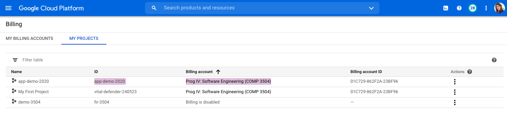

In this activity, you will create a virtual machine (VM) on Google Cloud to run your MySql service. Then, you will run a REST API code sample on a node.js platform in AppEngine in Google Cloud Platform.
Students registered in the course can redeem their course credits for Google Cloud platform and use it for the activity and also for their course projects. The instruction to access Google Cloud course credit is provided under Course Information in BlackBoard.
In this part, you will create a VM on Google Compute Engine.
VM Setup
- Go to the Google Cloud console page.
- Check the top of the page and make sure that you have an active project listed in the header bar and your billing account is active for your project.


- Go to the Compute Engine tab and create a VM. Here is the detail you may use (vCPU: 2, Operating system: Ubuntu 18.04. Allow http and https traffic to your instance. Let the other parameters to stay in their default levels). Among these, the selection of the operating system is important to make sure that you can follow the commands in this activity.
- Click on save to create your instance and make sure that it is running.Your VM will receive a public IP that you can use to access services running in it.
Network Setup
- If you will run an application that uses special ports, you need to open those ports in the firewall, otherwise, you will not be able to access the service. For this, you need to create new rules in your firewall. To access the firewall configurations, click on the "View network details" from the settings (
 ) of your VM.
) of your VM.

- Create a new rule, and assign a name for your rule, and add that in the target tags as well. Set the source IP to 0.0.0.0/0 to let clients be able to access your application from anywhere. Set the ports you want to open, e.g., 80, 443, 8080, 8081, 3306, under ‘Protocols and ports' or you may open all ports (not recommended).
- After saving your rule, click on the name of your VM instance to edit its properties. Add the rule you defined to the network tags of your VM.

Setup Static IP
- When you start your VM, it receives a public IP address, but the address may change when you stop and restart the VM instance. If you want to keep your VM IP address to stay the same, you can assign a static IP address. This can be done in the network tab (right above the Firewall tab that you just worked with).
- Reserve a standard static IP V4 address and attach it to your VM instance by selecting the name of your instance from the list. (Later, you can use this IP address to define the authorized networks for your CLoud SQL instance.)

https://cloud.google.com/solutions/setup-mysql
- Login to your VM using ssh, and first update your system:
sudo apt update- Install MySql. (This document may also help you with the next few steps.)
sudo apt -y install mysql-server
sudo mysql_secure_installation- In your installation process, you may keep the root user, but make sure to assign a password to your root users. For security reasons, do not leave the password to be empty.
- When the installation is done, you may connect to your mysql environment using:
sudo mysql -u root -p- You can now use sql command to create databases, tables, and insert some records. You can now enter mysql commands to use an existing database (
usemy_database), or see the existing databases (show databases;).
show databases;
use my_database;- You can list the existing tables (
show tables;) or create a table. This example here, is creating a table called rest_emp with four columns of name, phone, email, address.
CREATE TABLE rest_emp (id INT AUTO_INCREMENT PRIMARY KEY, name varchar(255) not null, phone varchar(12), email varchar(255) not null, address varchar(255)not null);- You can enter data into your table. For example:
insert into rest_emp(name, phone, email, address) values ('Demo User', '111 111 1111', 'demo.user@test.com', '100 Street SW');- View the results in your table:
select * from rest_emp;- Now, your database is ready. You can connect locally to your database. If you want to connect to your database from elsewhere, e.g., from your AppEngine, or from your local development setting, you need to change the mysql configurations to allow remote access. To do this, you need to make a change in your mysqld.cnf file, and then restart your mysql service. You may read the details in this document.
- Open your mysqld.cnf. (depending on the installed database version, the location of the file might be slightly different on different systems).
sudo nano /etc/mysql/mysql.conf.d/mysqld.cnf- Navigate to the line that begins with the
bind-addressdirective. The default value will be127.0.0.1, meaning that the server will only look for local connections. You will need to change this directive to reference an external IP address, or set it to0.0.0.0meaning that it can be accessed from anywhere. The last option might not be convenient for production servers, but for practice, it might be easier to use.
- Make sure that the billing is active for the project that you are currently in.
- Now, let's setup our REST API application. The code is in Express Js and needs a Node environment to run. Instead of installing the node platform, let's use the AppEngine from Google Cloud.
- Go to the AppEngine tab in your console, and start it.
- Select a project if you have multiple projects. Use the default time zone.
- Select the Standard, Node.js environment. This should take care of the Node installations for you.
- We will be using the online Cloud Shell to connect to our App on AppEngine. Feel free to skip the step that asks for installing the Google Cloud SDK. This is needed, if you want to run the commands from your local computer. We can skip this for now.
- Open Cloud Shell by clicking the Cloud Shell icon (
 ) in the upper right corner.
) in the upper right corner.

- Make sure that your project is selected correctly (the name in color) in the Cloud Shell. If not, you can see the list of your projects and select a project using the following gCloud commands:
gcloud projects list
gcloud config set project my-project- From this shell, you have access to the machine that will host your application, and AppEngine has provided you with a machine that already has the Node installation.
- Let's now get the code from Github to this machine. Git is also already installed on your machine. Enjoy it!
- Clone the Git repository to get the sample code:
git clone https://github.com/Yasaman-A/rest-API-examples.git
cd rest-API-examples/- The code requires your database credentials. These need to be added to a file called .env (which you should create).
- Create the .env file under your rest-API-examples folder and open it to modify it:
touch .env
nano .env- Add your database information to the .env file, e.g.,
DB_HOST=136.777.888.55
DB_PORT=3306
DB_NAME=my_database
DB_USER=root
DB_PASS=SecReTP@ssw0rd- Save your .env file. To confirm the file content, you can view the content using the "cat" command:
cat .env- The dependencies are listed in the package.json file. To install the dependencies, run:
npm install- Now, you can start the code by Google Cloud command:
gcloud app deploy- When your app is running, you can see the URL of your service at using
gcloud app browse- Note that the AppEngine server is already on https. So you can call it from anywhere and use it.